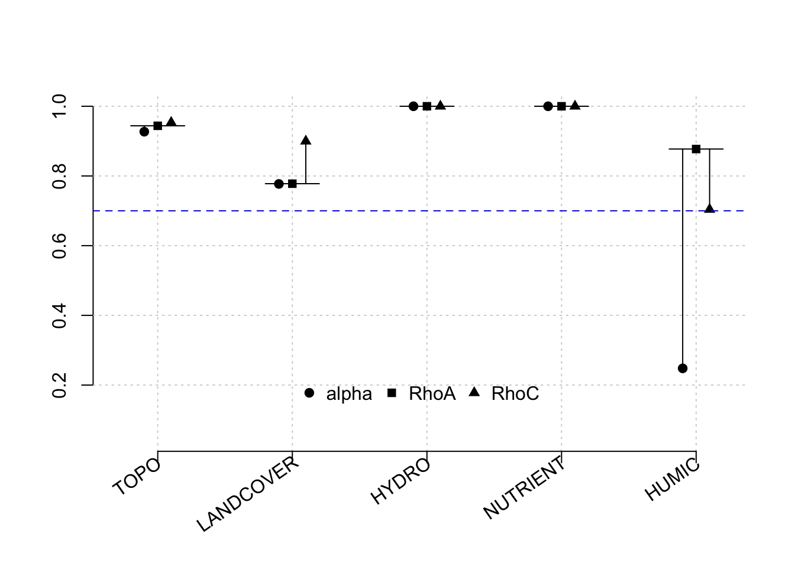

8.1 Model 1: Early season - streams
For this model demonstration, our EEMs dataset has been filtered to ‘stream’ samples only (no wells) (n= 91)
ABOUT THIS MODEL - stream samples during peak lower descending to baseflow (August - April 30) n=30 - response is LABILE.
Our indicators for each latent variable are as follows:
Topo:
–mean distance that allochthonous water has to travel to the stream channel
–mean aspect in radians
–mean subcatchment TWI
Landcover:
– % of subcatchment pixels with harvested/regenerating vegetation
– mean NDVI
LABILE:
##
## Results from package seminr (2.3.4)
##
## Path Coefficients:
## HYDRO LANDCOVER NUTRIENT HUMIC
## R^2 0.103 0.841 0.187 0.644
## AdjR^2 0.043 0.835 0.133 0.607
## TOPO 0.079 0.917 -0.140 .
## LANDCOVER -0.392 . -0.300 0.693
## HYDRO . . . -0.124
## NUTRIENT . . . -0.104
##
## Reliability:
## alpha rhoC AVE rhoA
## TOPO 0.927 0.953 0.872 0.944
## LANDCOVER 0.777 0.900 0.818 0.777
## HYDRO 1.000 1.000 1.000 1.000
## NUTRIENT 1.000 1.000 1.000 1.000
## HUMIC 0.550 0.792 0.614 0.895
##
## Alpha, rhoC, and rhoA should exceed 0.7 while AVE should exceed 0.5A plot of result reliability measures: 
8.1.1 Results of bootstrapped PLS
## Original Est. Bootstrap Mean Bootstrap SD T Stat.
## TOPO -> LANDCOVER 1.068 1.065 0.066 16.253
## TOPO -> HYDRO 0.284 0.292 0.121 2.344
## TOPO -> NUTRIENT 0.417 0.403 0.121 3.455
## TOPO -> HUMIC 0.751 0.771 0.087 8.656
## LANDCOVER -> HYDRO 0.363 0.367 0.143 2.533
## LANDCOVER -> NUTRIENT 0.486 0.463 0.157 3.089
## LANDCOVER -> HUMIC 0.916 0.931 0.074 12.364
## HYDRO -> NUTRIENT 0.774 0.735 0.165 4.696
## HYDRO -> HUMIC 0.428 0.412 0.145 2.954
## NUTRIENT -> HUMIC 0.492 0.450 0.174 2.832
## 5% CI 95% CI
## TOPO -> LANDCOVER 0.972 1.184
## TOPO -> HYDRO 0.103 0.499
## TOPO -> NUTRIENT 0.204 0.601
## TOPO -> HUMIC 0.631 0.903
## LANDCOVER -> HYDRO 0.143 0.604
## LANDCOVER -> NUTRIENT 0.180 0.707
## LANDCOVER -> HUMIC 0.803 1.045
## HYDRO -> NUTRIENT 0.371 0.897
## HYDRO -> HUMIC 0.163 0.630
## NUTRIENT -> HUMIC 0.150 0.708This gives us the confidence intervals of the HTMT ratio.